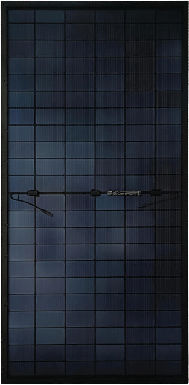
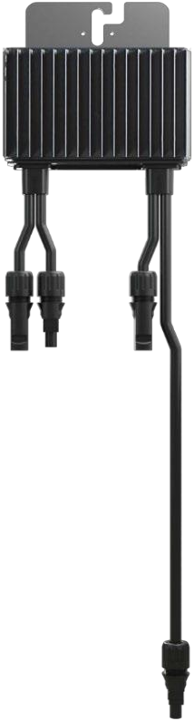

SUPER PREMIUM COMBINATION
All black.
Every panel monitored.
Premier NeoBlack full-black panels with a SolarEdge Home Wave three-phase inverter, and an S-Series optimiser on every panel for module-level monitoring.
PREMIER NEOBLACKAll-black panel


FRONT
BACK


SOLAREDGE HOME WAVEThree-phase inverter
+ S-SERIES OPTIMISER
1per panelS-Series optimiser, module-level monitoring
400VThree-phase, 3 / N / PE connection
FixedDCFixed DC voltage, made for longer strings
ArcfaultArc fault protection, built into the inverter
Premier NeoBlack: a uniform full-black look with reduced glare, TOPCon bifacial dual glass, 600 to 630 W.